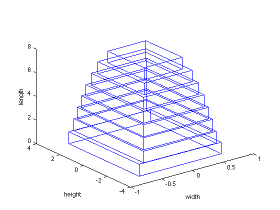

Exercise 4.31: Design of a cantilever beam (GP)
N = 8;
wmin = .1; wmax = 100;
hmin = .1; hmax = 6;
Smin = 1/5; Smax = 5;
sigma_max = 1;
ymax = 10;
E = 1; F = 1;
cvx_begin gp
variables w(N) h(N) v(N+1) y(N+1);
minimize( w'*h )
subject to
d = 6*F*ones(N,1)./(E*ones(N,1).*w.*h.^3);
for i = 1:N
(2*i-1)*d(i) + v(i+1) <= v(i);
(i-1/3)*d(i) + v(i+1) + y(i+1) <= y(i);
end
wmin <= w; w <= wmax;
hmin <= h; h <= hmax;
Smin <= h./w; h./w <= Smax;
6*F*[1:N]'./(w.*(h.^2)) <= sigma_max;
y(1) <= ymax;
cvx_end
disp('The optimal widths and heights are: ');
w, h
fprintf(1,'The optimal minimum volume of the beam is %3.4f.\n', sum(w.*h))
figure, clf
cantilever_beam_plot([h; w])
Successive approximation method to be employed.
For improved efficiency, sedumi is solving the dual problem.
sedumi will be called several times to refine the solution.
Original size: 200 variables, 65 equality constraints
48 exponentials add 384 variables, 240 equality constraints
-----------------------------------------------------------------
Errors
Act Centering Conic Status
-----------------------------------
43 4.389e+00 1.960e+00 Solved
43 7.124e-01 4.447e-02 Solved
43 2.428e-02 4.872e-05 Solved
43 5.446e-04 1.117e-06 Solved
43 6.892e-05 1.117e-06S Solved
43 4.228e-06 3.048e-07 Solved
43 1.861e-06 1.646e-08 Solved
43 2.810e-06S 0.000e+00 Solved
-----------------------------------------------------------------
Status: Solved
Optimal value (cvx_optval): +42.3965
The optimal widths and heights are:
w =
0.6214
0.7830
0.9060
1.0124
1.1004
1.1762
1.2000
1.3333
h =
3.1072
3.9149
4.5298
5.0620
5.5019
5.8812
6.0000
6.0000
The optimal minimum volume of the beam is 42.3965.
